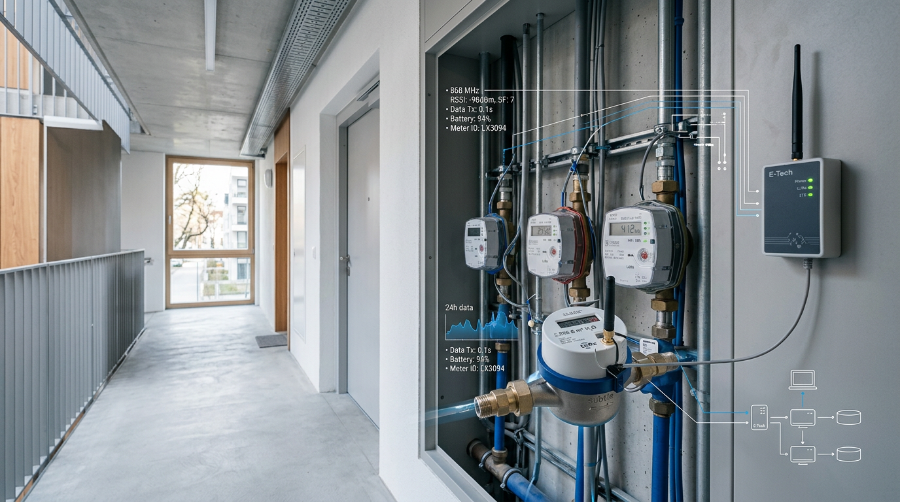

LoRaWAN Gebäude Submetering: Ihr Praxis-Guide für Effizienz

TL;DR
LoRaWAN revolutioniert Gebäude-Submetering durch kostengünstige IoT-Vernetzung. Dieser Guide zeigt, wie Sie mit dieser Technologie Verbrauchsdaten sammeln, Kosten senken und den Gebäudebetrieb optimieren. Er ist praxisorientiert für Bauherren, Asset- und Facility-Manager.
Die Digitalisierung von Gebäuden schreitet unaufhaltsam voran. Besonders im Bereich des Submeterings, also der Detailerfassung von Verbräuchen einzelner Mieteinheiten oder Geräte, bietet sich enormes Potenzial. LoRaWAN, als eine der führenden Low-Power-Wide-Area-Netzwerktechnologien, verspricht hier eine kosteneffiziente und flexible Lösung, die Gebäude mit intelligenten Nutzungsdaten versorgt.
Was ist LoRaWAN und warum ist es für das Gebäude-Submetering relevant?
LoRaWAN (Long Range Wide Area Network) ist ein Funkprotokoll, das für die drahtlose Übertragung kleiner Datenmengen über weite Distanzen bei geringem Energieverbrauch konzipiert ist. Für das Gebäude-Submetering bedeutet dies, dass Sensoren und Zähler – etwa für Strom, Wasser, Wärme oder Gas – Daten an ein zentrales Gateway senden können, ohne dass eine aufwendige Verkabelung der einzelnen Messpunkte erforderlich ist. Die Reichweite eines einzelnen Gateways kann in städtischen Umgebungen mehrere Kilometer betragen, in Gebäuden sind es typischerweise mehrere Stockwerke oder eine signifikante Gebäudefläche, abhängig von der Bausubstanz.
Der entscheidende Vorteil für das Management von Liegenschaften liegt in der Skalierbarkeit und den geringen Betriebskosten. Anstatt teure, proprietäre Netzwerke zu installieren oder für jeden Sensor eine eigene SIM-Karte zu nutzen, ermöglicht LoRaWAN den Aufbau eines einzigen Netzwerks für eine Vielzahl von Sensoren. Dies reduziert sowohl die Anfangsinvestitionen als auch die laufenden Kosten für Datenübertragung und Wartung erheblich. Studien von Fraunhofer und anderen Forschungseinrichtungen bestätigen das Potenzial von LPWAN-Technologien wie LoRaWAN für die Energieeffizienzsteigerung in Bestands- und Neubauten.
Anwendungsfälle im Gebäude-Submetering
Die Einsatzmöglichkeiten von LoRaWAN im Gebäude-Submetering sind vielfältig. Die primäre Anwendung ist die automatische Erfassung von Verbrauchsdaten. Intelligente Stromzähler, Wasseruhren mit Funkschnittstellen, Wärmemengenzähler oder Gassensoren, die auf LoRaWAN basieren, können ihre Messwerte in kurzen Intervallen – zum Beispiel alle 15 bis 60 Minuten – an das Gateway senden. Diese Daten können dann zur präzisen Verbrauchsabrechnung für Mieter, zur Erkennung von Anomalien (z.B. Lecks bei Wasser) oder zur Optimierung des Energieeinsatzes genutzt werden.
Darüber hinaus lässt sich LoRaWAN für das Monitoring von Umweltparametern einsetzen. Sensoren für Raumtemperatur, Luftfeuchtigkeit, CO2-Gehalt oder Präsenz können ebenfalls über das Netzwerk angebunden werden. Diese Daten sind essenziell für das moderne Facility Management, um den Komfort in den Räumlichkeiten zu gewährleisten, die Luftqualität zu überwachen und energieintensive Lüftungs- oder Heizsysteme bedarfsgerecht zu steuern. Dies kann zu einer Einsparung von Energiekosten im Bereich von schätzungsweise 5-15% führen, abhängig von der initialen Effizienz und den umgesetzten Maßnahmen.
- Automatische Verbrauchsdatenerfassung für Strom, Wasser, Wärme, Gas.
- Detaillierte Verbrauchsabrechnung für Mieter und Nutzer.
- Früherkennung von Leckagen und Betriebsunterbrechungen.
- Monitoring von Raumklima-Parametern (Temperatur, Luftfeuchtigkeit, CO2).
- Optimierung von Heizungs-, Lüftungs- und Klimaanlagen (HLK).
- Erfassung von Anwesenheitsdaten zur bedarfsgerechten Raumnutzung und -steuerung.
Technische Infrastruktur und Implementierung
Der Aufbau einer LoRaWAN-Infrastruktur für das Gebäude-Submetering ist vergleichsweise unkompliziert. Kernstück ist das LoRaWAN-Gateway, das als Brücke zwischen den Sensoren und dem Netzwerkserver fungiert. In größeren Gebäudekomplexen können mehrere Gateways erforderlich sein, um eine flächendeckende Abdeckung zu gewährleisten. Die Platzierung sollte strategisch erfolgen, um eine optimale Signalstärke zu allen Endgeräten zu erzielen. Typischerweise sind für ein durchschnittlich großes Bürogebäude (ca. 5.000 m² Nutzfläche) ein bis zwei Gateways ausreichend.
Die LoRaWAN-Netzwerkserver verarbeiten die eingehenden Daten und leiten sie an eine übergeordnete Applikation weiter, wo die Daten visualisiert, analysiert und gespeichert werden. Dies kann eine eigene Cloud-Plattform, eine lokale Serverlösung oder eine Software-as-a-Service (SaaS)-Lösung eines Drittanbieters sein. Die Auswahl hängt von den individuellen Anforderungen an Datensicherheit, Skalierbarkeit und Integration ab. Die Kosten für ein LoRaWAN-Gateway liegen im Bereich von wenigen hundert bis etwa tausend Euro, während die durchschnittlichen Kosten pro Endgerät (Sensor/Zähler) in der Anschaffung bei etwa 10-50 Euro liegen können, zuzüglich minimaler jährlicher Gebühren für die Netzwerkanbindung und Datenplattform.
Herausforderungen und Best Practices
Bei der Implementierung von LoRaWAN für das Gebäude-Submetering sind einige Herausforderungen zu berücksichtigen. Die größte technische Hürde kann die Netzabdeckung innerhalb des Gebäudes sein, insbesondere in älteren Bauten mit dicken Wänden oder Metallstrukturen, die das Funksignal dämpfen können. Eine gründliche Standortanalyse und gegebenenfalls der Einsatz von externen Antennen oder zusätzlichen Gateways sind hier entscheidend. Auch die Wahl der richtigen Sensoren, die für die jeweilige Anwendung geeignet sind und über eine ausreichende Batterielaufzeit – oft 5 bis 10 Jahre – verfügen, ist von großer Bedeutung.
Aus betrieblicher Sicht ist die Dateninterpretation und -nutzung essenziell. Die bloße Erfassung von Daten bringt keinen Mehrwert; sie muss in Aktionen überführt werden. Dies erfordert geeignete Analyse-Tools und klare Verantwortlichkeiten im Facility Management. Die Zusammenarbeit mit erfahrenen Systemintegratoren, die sowohl die Netzwerktechnik als auch die Anwendungssoftware verstehen, ist ratsam. Ein Pilotprojekt in einem Teilbereich des Gebäudes kann helfen, die Technologie und die Prozesse zu validieren.
Häufige Fragen
Welche Reichweite hat LoRaWAN typischerweise in einem Gebäude?
In einem typischen Bürogebäude kann die Reichweite eines LoRaWAN-Gateways je nach Bausubstanz und Stockwerkanzahl zwischen 100 und 500 Metern liegen. Mehrere Stockwerke sind meist gut abgedeckt, bei sehr dicken Wänden oder komplexen Strukturen können jedoch mehrere Gateways oder Repeater notwendig sein.
Wie lange halten die Batterien der LoRaWAN-Sensoren?
Die Batterielaufzeit von LoRaWAN-Sensoren ist ein großer Vorteil. Abhängig von der Sendehäufigkeit und der Geräteklasse können die Batterien in der Regel zwischen 5 und 10 Jahren halten. Dies reduziert den Wartungsaufwand erheblich.
Ist LoRaWAN für die minutengenaue Echtzeitmessung geeignet?
LoRaWAN ist für geringe Datenraten und geringe Sendehäufigkeit optimiert. Für das Submetering, bei dem Messwerte oft alle 15-60 Minuten erfasst werden, ist es hervorragend geeignet. Für Millisekunden-genaue Echtzeitdaten ist es nicht die erste Wahl.
Welche Kosten sind für eine LoRaWAN-Implementierung zu erwarten?
Die Kosten variieren stark, aber ein typisches Gateway kostet im Bereich von 200-1000 Euro. Die einzelnen Sensoren liegen bei 10-50 Euro pro Stück in der Anschaffung. Hinzu kommen laufende Kosten für die Netzwerkanbindung und die Datenplattform, die aber im Vergleich zu anderen Technologien sehr gering sind.
Wie sicher ist die Datenübertragung mit LoRaWAN?
LoRaWAN verfügt über starke Verschlüsselungsmechanismen (AES-128) auf der Netzwerk- und Anwendungsebene. Die Daten werden sowohl während der Übertragung als auch auf dem Server geschützt. Dies entspricht gängigen Industriestandards für IoT-Sicherheitsanforderungen.